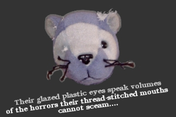

Kat Litter
Tales
Lectures
Eye Candy
Accretions
Kat Who?
Poke

January 30, 2005, 05:08 UTC
MANUSCRIPT REVISION IN PROGRESS
This site will be updated and redesigned when current revision is complete. (Guessing mid-February.) New version will be optimized for Firefox/Mozilla utilizing CSS2, plus new graphics and other good stuff. If you're still using IE, you won't get the full, juicy impact of the upcoming new design, so... download the fabulous Firefox for free! (Yes, I pimp the browser: it's good. Go get it!)
© 2001-2005 M. Kathleen Huffine/Kat Richardson. All rights reserved.